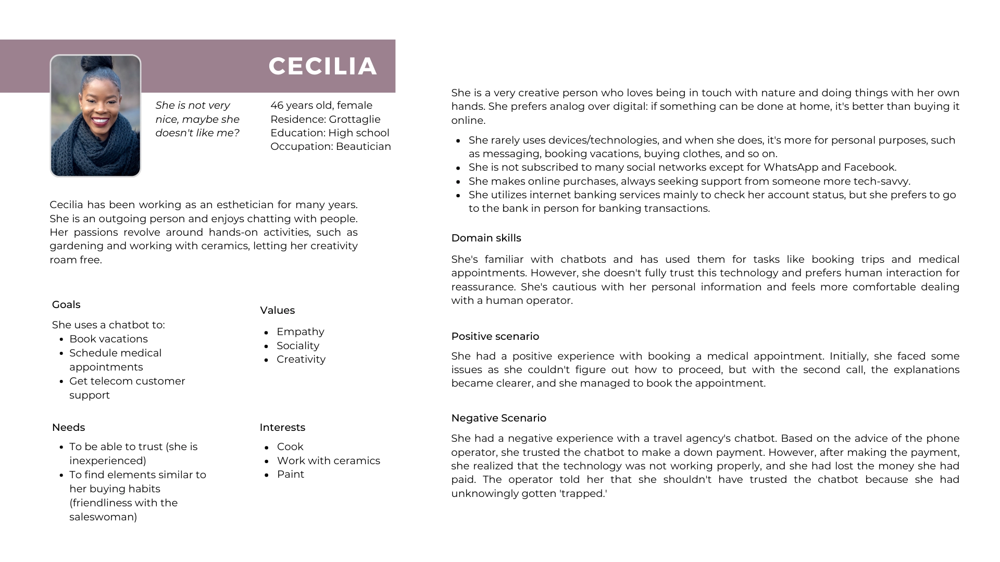
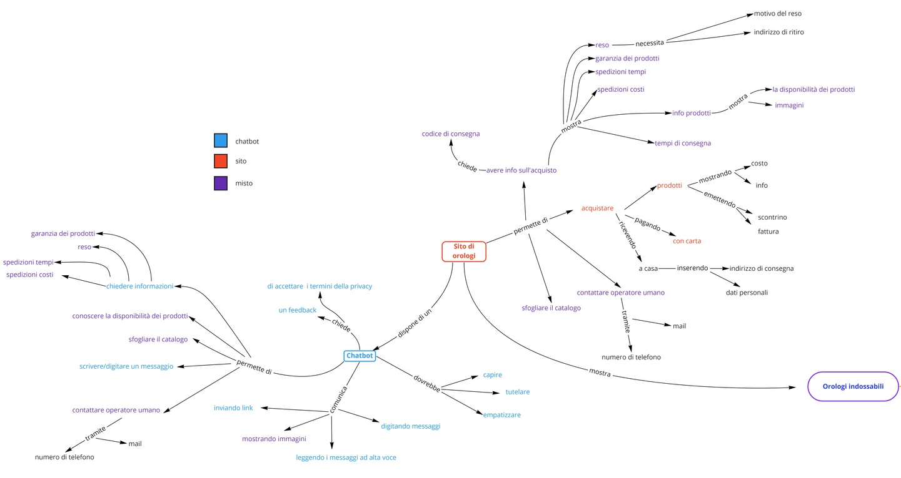
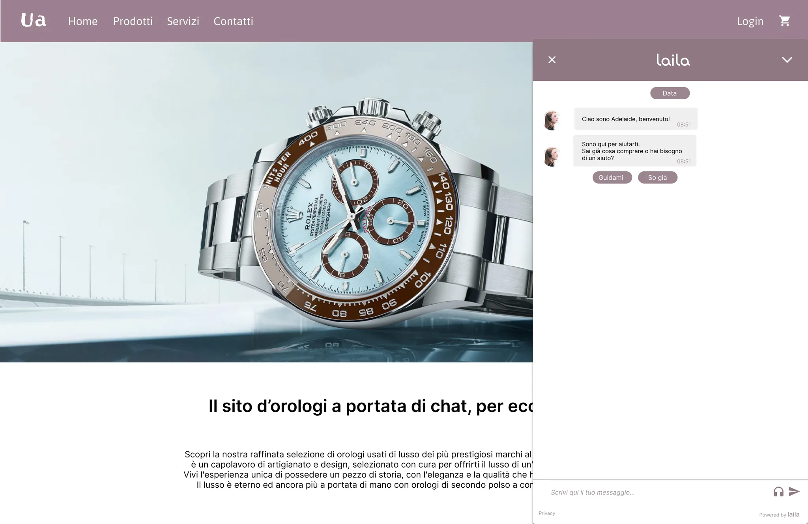
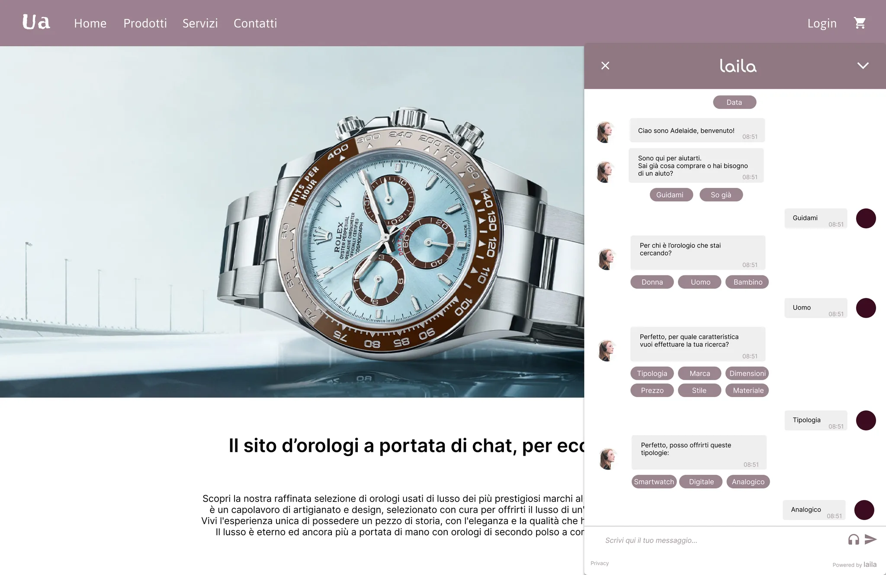
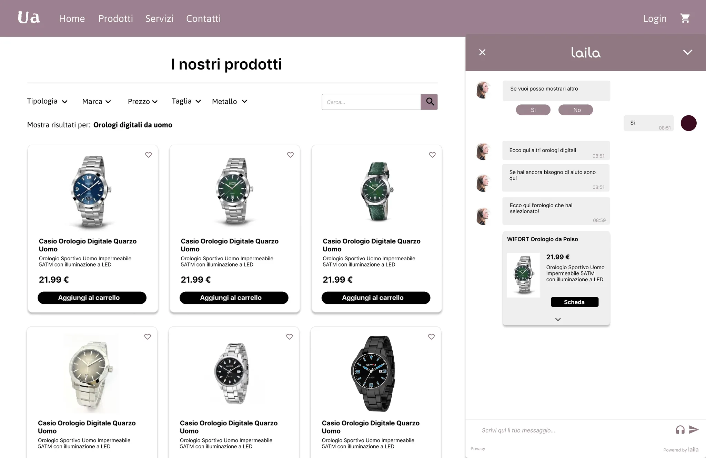
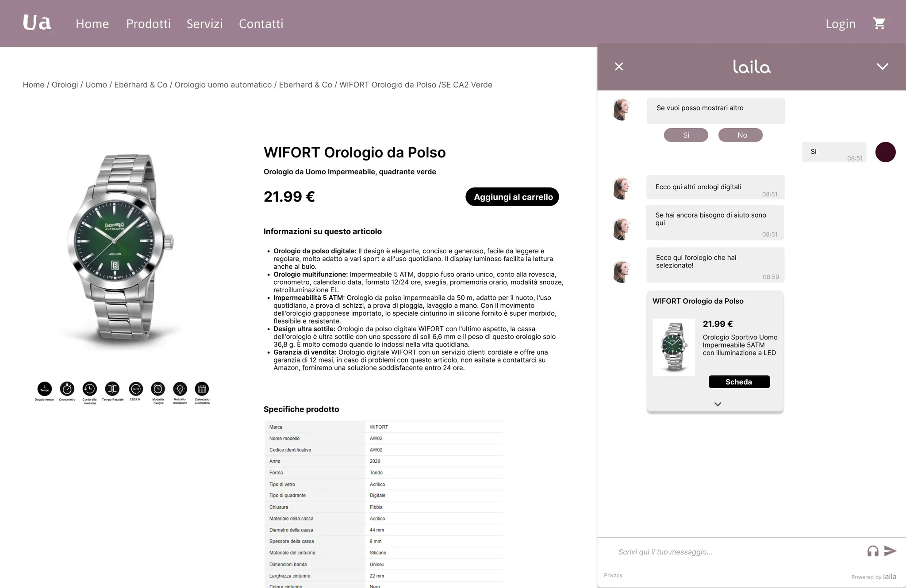

Designing a human-centered chatbot for e-commerce customer support.
Exploring mental models, usability, and human-like interaction.
Laila is a 5-month research-driven project exploring how conversational UX can feel natural, empathetic, and truly helpful in e-commerce. We set out to understand why users hesitate to trust chatbots and how we could design one that feels less like a tool and more like a knowledgeable sales assistant.
Many users perceive chatbots as rigid, impersonal, or inefficient. Negative past experiences create skepticism, especially when conversations feel scripted or disconnected from the shopping journey.
How might we design a chatbot that aligns with users’ mental models and supports them seamlessly while shopping online?
We began by defining stakeholders and users, conducting benchmark analyses, and running user interviews with 10 participants aged 18–60. Research explored mental models, prior experiences, attitudes toward chatbots, and interactions with online shopping.
Key insights:
From interviews, we created personas representing different user attitudes toward chatbots. This helped identify behavioral patterns, expectations, and friction points.

Customer journey maps helped us understand how different users approach chatbot interaction, highlighting flows for guided, functional, and empathetic experiences.
We conceptualized the domain of watches for e-commerce to define chatbot knowledge representation, interaction patterns, and hybrid workflows with the website. We created concept maps, identified key nodes, and categorized terms into types, operating mechanisms, and features.

We designed hybrid wireframes showing Laila as a virtual salesperson guiding users through product selection and purchase. The chatbot adapts tone, context, and guidance using a hybrid AI approach, integrating the website seamlessly.




Laila demonstrates how conversational UX can: